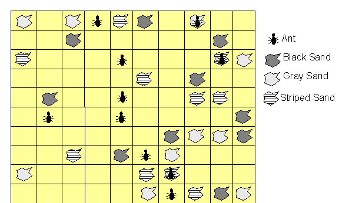
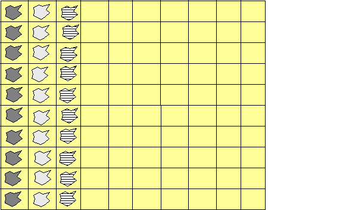

The first challenge is identifying an interesting problem and determining that the selected problem has a reasonable chance for success. The key characteristic about finding a genetic programming solution to a problem is that you are trading computer processing effort against human development effort. There are problems that can be developed with traditional programming that can be also solved with genetic programming. However, you may find in some cases that the effort to create the genetic programming software architecture above is equal to or greater than the effort to create the solution with traditional programming.
However, you might receive by creating a genetic solution to a previously solved problem or a simple problem. I definitely learned about using JGAP by trying to solve a simple problem and to repeat a research result. This tutorial will start by identifying how to use JGAP to find programs using a previously solved genetic problem.The problem consists of 10 ants in a 10x10 toroidal grid with 10 black sand grains, 10 gray sand grains, and 10 striped sand grains. The goal is to find a single program that when run on each ant, moves the grains of sands into the first three columns.

Starting map

Final map with sand aligned into columns
For a
problem with an unknown solution, we need to identify a set of functions that
are sufficient to solve the problem. For
our problem, we are using the function set identified by Koza.
Terminals = {X, Y, Carrying, SandColor, GO_N,
GO_E, GO_S, GO_W, MoveRandom, Pickup}
Functions = {IfLessThanOrEqual, IfLessThanZero,
IfDrop}
I chose to
implement the business logic in two classes. The AntMap contains the knowledge of the locations and the set of
ants. It is responsible for loading the
problem from a file location that contains the sand and ant locations. It is also responsible for presenting the
current state of the map on System.out. The ant class is responsible for any ant specific behavior. The approach of using the domain classes
allowed unit testing the behavior outside of the JGAP framework and
subsequently creating JGAP based unit tests to compare against the domain
behavior.
The domain
classes can easily be modified to a more modern approach by changing the return
values from int’s to void’s. These
procedures can then be mapped to appropriate genetic classes.
Now that we
know the functions that we want to try for our program, we need to convert the
functions into appropriate JGAP compatible classes. For each terminal and each function listed
above there is a corresponding Java class. You can browse the classes in the paintedDesert package. For this tutorial, we’ll focus on the key
concepts to integrate with the JGAP framework.
Class constructor – Each function class needs a constructor that extends from CommandGene. Just like the JGAP anttrail example, we’ve created an AntCommand class to provide the common behavior related to retrieving the AntMap.Somewhere in the construction of the object, the instance must identify the number of arguments and the return type. The number of arguments is the second argument in the CommandGene constructor and passed in as the a_arity of the argument. The third argument in the constructor is the return type. You should use the CommandGene static definitions of types; BooleanClass, IntegerClass, LongClass, FloatClass, and VoidClass. The additional parameters int a_subReturnType and final int[] a_childSubTypes have the following meaning:
Consider a function that returns an integer number, thus it’s return type is declared as IntegerClass (or: Integer.class). Consider further, that you have a function that expects as parameter an Integer typed input. If for any reason you want to avoid that the first mentioned function returning IntegerClass is potentially used as input for the latter mentioned function, you can use different sub types. That means: The function returning IntegerClass could have a subReturnType of, say, 1, whereas the function receiving the input type IntegerClass could have a childSubType that is different from the subReturnType 1. For childSubtype you could use 2, e.g.
In which cases does it make sense to avoid a function with fitting
return type being the input of a function expecting this return type as input
type? For example, if one function returns an integer number that represents a
multiplier which could be in the range 2..5, and the other function expecting an
integer number representing the index of an array, being in the range of 0..99.
if
(a_chromNum
== 0) {
return
CommandGene.VoidClass;
} else
if (a_chromNum == 1) {
return
CommandGene.IntegerClass;
}
The next
step is to create a batch command or other mechanism to invoke the
PaintedDesertProblem’s main subprogram. However, if your experience is like mine, then the program runs and it
doesn’t solve the problem as you had hoped.
Or you
could have made a traditionally programming mistake? In the
I’d like to
add a note about the kinds of mistakes you can make. I’ve identified that mistakes were made in
the domain classes. I put together some
elemental unit test examples to work through the issues. Certainly, the unit test coverage is not
complete, but it provides an idea that may help you with your challenge. You might notice that one test case,
OneElementGenElementsTest, compares the result of the hand coded solution
against a solution using the JGAP function classes. One other confession to note, as simple as
this problem is, I made a key mistake in programming the IfDrop class. It did not drop the sand. Therefore, the genetic program could never
solve the problem. It was a simple
oversight that cost too many hours of frustration and exploration, but helped
me understand more about JGAP.
public void testGO_W()
throws
Exception {
GPProgram
prog = new GPProgram(m_gpconf, 3);
m_antMap.resetMap();
prog.setApplicationData(m_antMap);
ProgramChromosome
pc1 = new ProgramChromosome(m_gpconf, 50, prog);
pc1.getFunctions()[0]
= new GO_W(m_gpconf);
pc1.redepth();
prog.setChromosome(0,
pc1);
Object[]
noargs = new Object[0];
int answer =
prog.execute_int(0, noargs);
assertEquals(1,
m_antMap.getAnt().getXpos());
assertEquals(1,
m_antMap.getAnt().getYpos());
answer
= prog.execute_int(0, noargs);
assertEquals(0, m_antMap.getAnt().getXpos());
assertEquals(1,
m_antMap.getAnt().getYpos());
answer
= prog.execute_int(0, noargs);
assertEquals(2, m_antMap.getAnt().getXpos());
assertEquals(1,
m_antMap.getAnt().getYpos());
}
The second
argument in new GPProgram(m_gpconf, 3) identifies the number of programs that you are
going to add to the GPProgram instance.
One trick is that you must run the redepth() subprogram before you add
the program to the GPProgram instance using setChromosome(…).
Another minor trick is how you handle
nesting subfunctions with arguments. The
testSolution subprogram of the OneAntGenElementsTest class is an example of how
nesting works.
// IFLTE
(GO-W) (IF-DROP COLOR (IFLTE (GO-W) X (GO-S) (PICK-UP))) (IFLTE X
// COLOR
COLOR (PICK-UP)) (GO-S)
ProgramChromosome
pc1 = new ProgramChromosome(m_gpconf, 50, prog);
pc1.getFunctions()[0] = new
IfLessThanOrEqual(m_gpconf, CommandGene.IntegerClass);
pc1.getFunctions()[1] = new GO_W(m_gpconf);
pc1.getFunctions()[2] = new IfDrop(m_gpconf, CommandGene.IntegerClass);
pc1.getFunctions()[3] = new SandColor(m_gpconf);
pc1.getFunctions()[4] = new
IfLessThanOrEqual(m_gpconf, CommandGene.IntegerClass);
pc1.getFunctions()[5] = new GO_W(m_gpconf);
pc1.getFunctions()[6] = new X(m_gpconf);
pc1.getFunctions()[7] = new GO_S(m_gpconf);
pc1.getFunctions()[8] = new Pickup(m_gpconf, "First Pickup");
pc1.getFunctions()[9] = new IfLessThanOrEqual(m_gpconf, CommandGene.IntegerClass);
pc1.getFunctions()[10] = new X(m_gpconf);
pc1.getFunctions()[11] = new SandColor(m_gpconf);
pc1.getFunctions()[12] = new SandColor(m_gpconf);
pc1.getFunctions()[13] = new Pickup(m_gpconf, "Second Pickup");
pc1.getFunctions()[14] = new GO_S(m_gpconf);
pc1.redepth();
prog.setChromosome(0,
pc1);
If the function class requires one or more arguments, then the classes are added in the following array elements and are used by the nested function class before continuing to add arguments to the parent function class.
Created by Scott Mueller, extended and formatted by Klaus Meffert